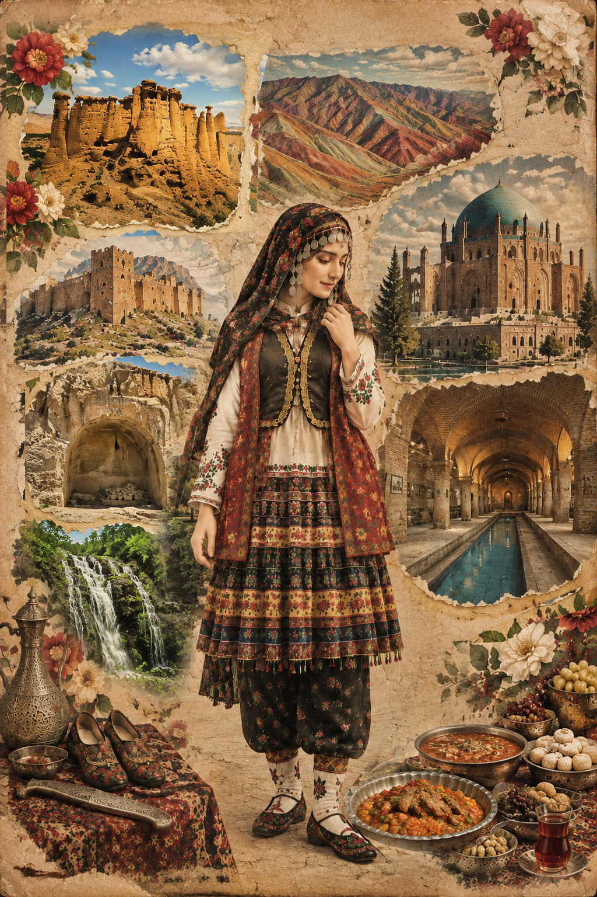

پوشش زنان زنجان
پوشاک سنتی زنان زنجان از جلوههای ارزشمند فرهنگ بومی منطقه است. این پوشش با پیراهنهای محلی، دامنهای چیندار، جلیقههای تزئینشده، سربندها و زیورآلات سنتی شناخته میشود. شکل و ترکیب لباس در روستاها و نواحی مختلف استان تفاوتهایی دارد.
پوشن
پارچهای برای پوشاندن و نگهداشتن مو که در آرایش سر استفاده میشده است.
چنهآلتی
آویز تزئینی زیر چانه، ساختهشده از سکههای قلابدار یا منجوق.
یاشماق
پوششی برای دهان، چانه و گردن.
جلیزقا و یل
جلیقه بدون آستین و بالاپوش آستیندار در پوشاک سنتی زنان.
کوینک و تومان
پیراهن محلی و دامن یا تنبان سنتی که در برخی مناطق به شکل بلند و چیندار پوشیده میشده است.
چاروق
پایافزار چرمی سنتی که از شناختهشدهترین نمادهای هنر زنجان است.
روستاها و روایتهای محلی
پوشاک محلی در برخی روستاهای زنجان هنوز بخشی از حافظه فرهنگی منطقه است. از نمونههای شناختهشده میتوان به پوشاک زنان طارمی اشاره کرد.
هزاررود – طارم
از روستاهای شناختهشده در معرفی پوشاک محلی زنان طارمی.
سانسیز – طارم
از مناطقی که پوشش سنتی زنان در آن گزارش شده است.
آببر و روستاهای طارم
منطقهای با تنوع فرهنگی و پوششهای محلی متأثر از شیوه زندگی روستایی.
خوئین
روستایی تاریخی در استان زنجان با هویت فرهنگی و زبانی ویژه.
زبان و فرهنگ
ترکی آذربایجانی با گونه زنجانی، زبان رایج بخش بزرگی از مردم استان است. فارسی نیز زبان رسمی و مشترک است. در برخی روستاها، گونههایی از زبان تاتی نیز حفظ شدهاند.
موسیقی عاشیقی، آیینهای محلی، هنرهای دستی و مراسم سنتی از بخشهای مهم هویت فرهنگی زنجان هستند.
خوراکیهای محلی زنجان
جغوربغور
خوراکی محلی تهیهشده از جگر و دل و قلوه، معمولاً همراه پیاز و ادویه.
آش ترش
آشی محلی با طعم ترش و ترکیبی از حبوبات و سبزیجات.
ششانداز
غذایی سنتی که در برخی مناسبتها و شب چهارشنبهسوری تهیه میشود.
پیازو
خوراک سنتی و محلی زنجان.
نان اردک
از نانها و خوراکیهای سنتی منطقه.
شیرینی شستی و قرابیه
از شیرینیهای محلی و سوغات شیرین زنجان.
هنرهای دستی و سوغات
ملیلهکاری
هنر ظریف ساخت زیورآلات و اشیای تزئینی با رشتههای نقره.
چاقوسازی
یکی از شناختهشدهترین هنرهای فلزکاری زنجان.
چاروقدوزی
ساخت پایافزار چرمی سنتی و گونههای تزئینی آن.
مسگری و قلمزنی
هنر ساخت و تزئین ظروف و اشیای فلزی.
قالی، گلیم و جاجیم
بافتههای سنتی که در بخشهای مختلف استان رواج داشتهاند.
محصولات طارم
زیتون، روغن زیتون و محصولات باغی از سوغات شناختهشده این منطقه هستند.
جاذبههای تاریخی و طبیعی
گنبد سلطانیه
شاهکار معماری دوره ایلخانی و میراث جهانی ثبتشده در یونسکو.
معبد داشکسن
مجموعه سنگی تاریخی در نزدیکی سلطانیه با نقشبرجستههای اژدها.
قلعه بهستان
دژ صخرهای تاریخی در شهرستان ماهنشان، در کنار رود قزلاوزن.
رختشویخانه
بنای تاریخی منحصربهفرد زنجان که برای شستوشوی امن و سرپوشیده لباسها ساخته شده است.
غار کتلهخور
غاری شگفتانگیز با تالارها و سازههای آهکی در شهرستان خدابنده.
بازار تاریخی زنجان
بازاری سرپوشیده با راستهها، کاروانسراها و معماری آجری دوره قاجار.
موزه مردان نمکی
در عمارت ذوالفقاری؛ محل نگهداری آثار مردان نمکی معدن چهرآباد.
طبیعت طارم و قزلاوزن
چشماندازهای کوهستانی، رودخانهها و باغهای زیتون در شمال استان.
منابع و پژوهش بیشتر
منابع فارسی
استانداری زنجان – صنایع دستی و فرهنگ شهرستان زنجان ۳۶۰ – لباس محلی زنان زنجان کارناوال – غذاهای محلی زنجان علیبابا – جاذبههای گردشگری زنجان ویکیپدیای فارسی – جاذبههای گردشگری استان زنجانمنابع خارجی
Visit Iran – Zanjan Province Visit Iran – Zanjan Destination UNESCO – Soltaniyeh Dome Visit Iran – Rakhtshooy Khaneh Discover Iran – Zanjanپژوهش فرهنگی و طراحی وبسایت: مرجان ساعی
ایران، هزار رنگ | روایتی تصویری از پوشش زنان ایران